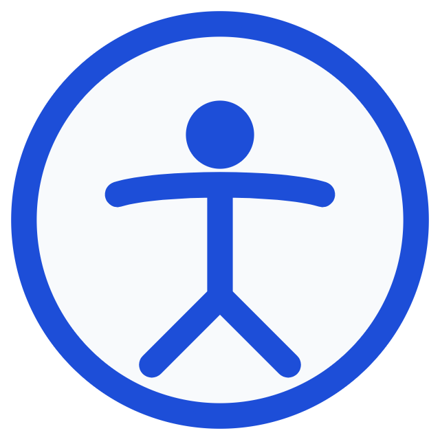

Lector de Pantalla
Escucha el contenido de la web con síntesis de voz natural, avisos acústicos de contexto y control de lectura pausada.

Escucha el contenido de la web con síntesis de voz natural, avisos acústicos de contexto y control de lectura pausada.
Videos interpretados en Lengua de Señas Salvadoreña (LESSA), acompañados de subtítulos descriptivos enriquecidos.
Interfaz secuencial paso a paso con botones extragrandes, lenguaje llano, pictogramas e instrucciones sin distracciones.
Paletas cromáticas validadas para protanopia, deuteranopia, tritanopia y modo monocromático absoluto con texto reforzado.